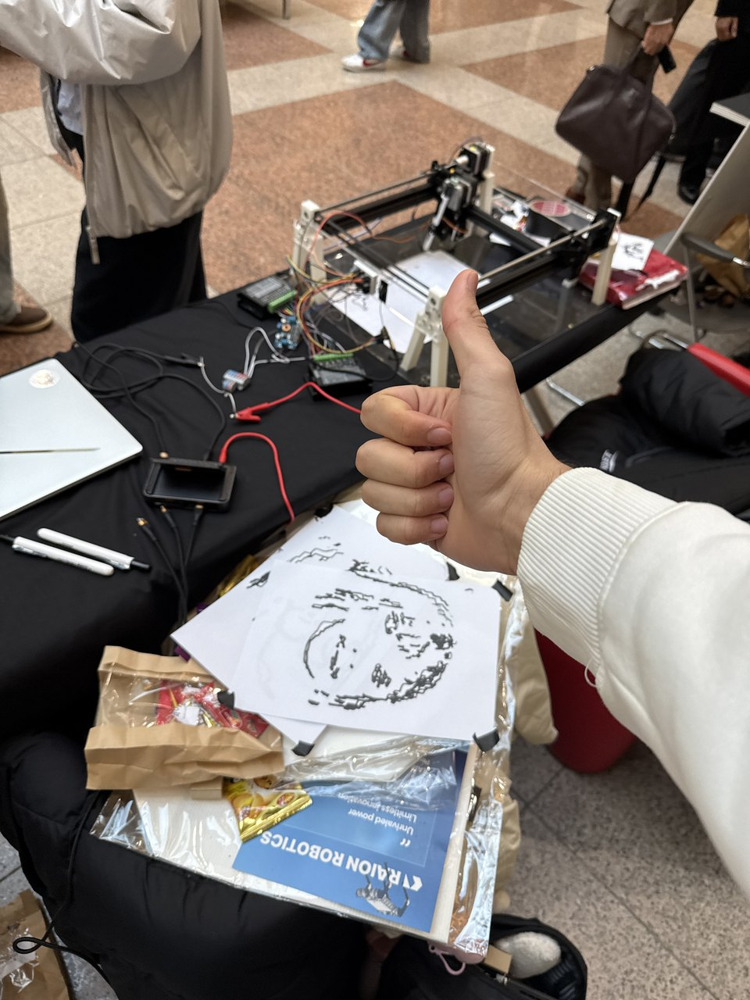

Work / Micro-Robotics club / 2025
Caricature drawing robot
A broken 3D printer, stripped for its steppers and rails, rebuilt as a machine that draws your face back at you. I worked on the software: the app that turns a photo into a caricature, and the part that decides what order to draw it in.

The problem
The club wanted a robot that draws caricatures of people at events. The mechanical half was mostly a salvage job — a dead 3D printer already contains two precise linear axes and the motors to drive them, which is a plotter with the extruder removed. We kept the steppers and rails and replaced the hot end with a pen on a servo, so the third axis is not a height at all. It is a binary: pen down, pen up.
The hard half was software. Turning a photograph into something a pen can draw means turning a grid of pixels into a set of strokes — and then, crucially, deciding what order to draw those strokes in.
What I built
A web app that takes a photo, applies the caricature distortion — exaggerating the features the way a street artist would — and reduces the result to line work. That line work becomes a set of paths, and the paths become G-code the machine can execute.
Between those last two steps is the part I find most interesting.
Key technical decisions
Stroke order is a graph problem. A portrait reduced to line work is a few hundred disconnected strokes. The pen has to draw each of them, and between any two it has to lift, travel and drop — and travel time is time the machine spends making no marks at all. Drawn in the order the strokes happen to come out of the image processing, the pen spends much of the run flying back and forth across the page.
So I treated the strokes as nodes in a graph, with edge weights being the travel distance between one stroke's end and the next one's start, and ran Dijkstra over it to order them. The output is G-code where consecutive strokes are near each other, the pen-up moves are short, and the drawing finishes noticeably faster — for the same picture, the same number of marks, and no change to the machine at all.
Open loop, so the geometry has to be exact. The steppers have no encoders — the machine has no idea where the pen actually is, only how many steps it has commanded. That means every millimetre in the drawing has to map to an exact step count, and any error accumulates silently across the whole portrait rather than being corrected. Getting the step-to-distance calibration right for each axis is what separates a face from a sheared face.
The pen is a servo, so the firmware stays simple. Standard G-code expects a continuous Z axis. Ours has two states. Rather than fight the convention, the ESP32 firmware interprets Z above a threshold as “pen up” and below it as “pen down”, so ordinary G-code from ordinary tools still runs on it unmodified.
What it taught me
That the algorithm is often the cheapest place to find performance. We could have chased faster feed rates, lighter carriages, stiffer belts — all real work, all requiring parts. Reordering a list made the machine visibly quicker in an afternoon.
It was also my first time owning the whole path from a user action to a physical result: someone's photo goes in one end, a pen moves at the other, and every layer in between is something I had to make work with the layers on either side of it.
Build
The machine and its output